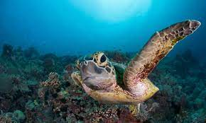
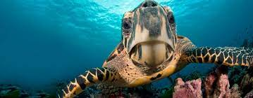
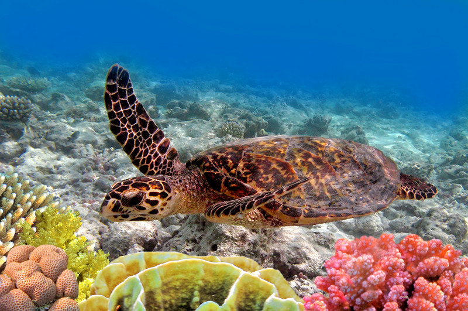
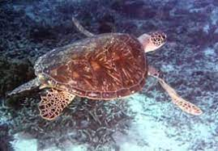
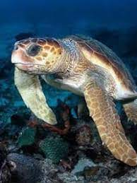

How do plants feed themselves? How did dogs evolve from wolves? What good is the appendix in humans, anyway? Such questions fall within the domain of biology, which seeks to understand living organisms and their vital processes (although the jury’s still out on what our appendixes are for). Biology’s diverse fields include botany, ecology, evolution, genetics, medicine, physiology, and zoology.
Marine biology, the science that deals with animals and plants that live in the sea. It also deals with airborne and terrestrial organisms that depend directly upon bodies of salt water for food and other necessities of life. In the broadest sense it attempts to describe all vital phenomena pertaining to the myriads of living things that dwell in the vast oceans of the world. Some of its specialized branches concern natural history, taxonomy, embryology, morphology, physiology, ecology, and geographical distribution. Marine biology is closely related to the science of oceanography because of the relationship of the physical features of the oceans to the living organisms that dwell in them. It aids in the understanding of marine geology through the study of those organisms that contribute their skeletal remains to the floors of the oceans or that elaborate the vast coral reefs of the tropic seas.
Click the first photo to be directed to a wikipedia page on turtles.
    Biological development, the progressive changes in size, shape, and function during the life of an organism by which its genetic potentials (genotype) are translated into functioning mature systems (phenotype).
In the entire realm of organisms, many different modes of development are found, the most important categories of which can be discussed as pairs of contrasting types. Development may amount to no more than a quantitative change (usually an increase) in a system that remains essentially unaltered. Qualitative development involves an alteration in the nature of the system. Pure examples of the first type are difficult to find. Approximations to it occur when an animal or plant has attained a structure with the full complement of organs; it then appears to increase only in size, that is to say, quantitatively.
In biology, taxonomy (from Ancient Greek τάξις (taxis) 'arrangement', and -νομία (-nomia) 'method') is the scientific study of naming, defining (circumscribing) and classifying groups of biological organisms based on shared characteristics.